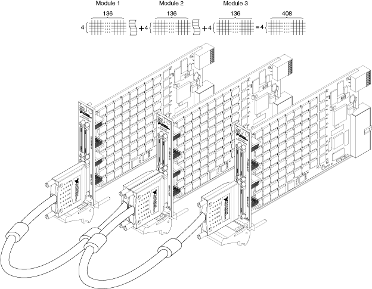

NI PXI-2535 Matrix Expansion
You can expand the matrices of the NI PXI-2535 by increasing the number of columns in the matrix using the SHC68-C68-S cable.
Column Expansion on the NI PXI-2535
Complete the following steps to expand the number of columns of a matrix.
- Connect one end of the SHC68-C68-S cable to a row connector on the NI PXI-2535.
- Connect the other end of the SHC68-C68-S cable to a row connector on another NI PXI-2535.
